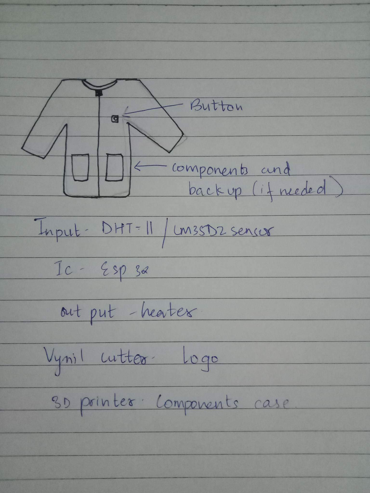
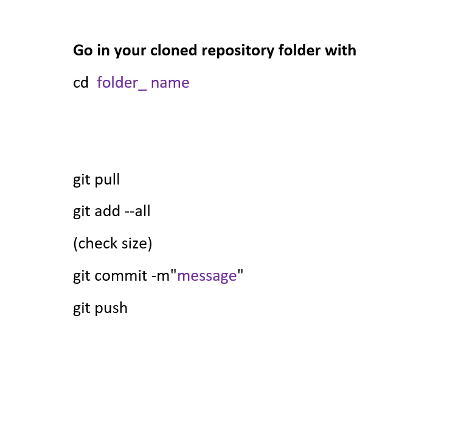

week 1 assignment
principle and practice
what is your final project
write down five to ten bullet points.
why do want to do it
back story
my final project idea
my final project idea is on sensor heater jackect.
The reason behind choosing sensore jacket which can be very useful during peak winter. My main motive behind choosing sensore heater jacket is that there will be less import from other country if i can fabricate on my own with affortable prices for people in our country
i wanted to work on this project becuase i have seen my dessup friends and even militaries doing northern boder duties are not able to bear the cold weather so i think my project would be very useful. These days heater jacket is commercialize more in market so mine will be bit advancee where i will use a sesnore which can sense human body temperature. To control the the senore i will use push button. whereas for heater jacket in the market the price is too high and it needs to be impotred for county like ourrs. what i have noticed in heater jackets in the maket is that they are using heating pads to charge from the power bank.
Project Management
understand more about Git through a git tutorial.
build a personal site in the class archive describing you and your final project.
document about how you bulit your website.
share your experiences(failure and successes) while creating your website.

Understanding GIT
DefinitionGIT is a distributed version control system that tracks changes in any set of computer files, usually used for coordinating work among programmers collaboratively developing source code during software development. Its goals include speed, data integrity, and support for distributed, non-linear workflows.
Installing GIT in the system
Download Git using the following link
get here
To see if you already have Git installed, open up your terminal application.
1.If you're on a Mac, look for a command prompt application called "Terminal".
2.If you're on a Windows machine, open the windows command prompt or "Git Bash".
GIT Clone
after configuration you have to clone your gitlab repository to your local repository by using the following commands
cd Documents
git clone
so to copy the link you have to go to your gitlab account and copy the SSH key link and paste it in the above mentioned link
Once you've opened your terminal application, type git version. The output will either tell you which version of Git is installed, or it will alert you that git is an unknown command. If it's an unknown command, read further and find out how to install Git.

Now go in your cloned repository folder with
cd folder_ name
now to pull and push files in your gitlab repository use the following commands;
git pull
git add –all (check size)
git commit -m”message”
git push

This way you can use SSH key to push and pull files from your local repository to your gitlab repository.
i got help from my instructor about the GIT commands.
This way i pushed my documents to the website.using GIT bash.And GIT commands.